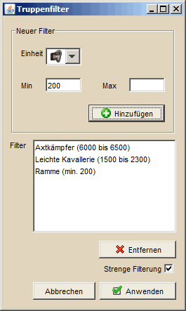

Angriffsplaner - Herkunft |
||
 |
||
Diese Kategorie dient dazu, die eigenen Dörfer auszuwählen, aus denen Angriffe gestartet werden sollen. Die erste Auswahl dient der Wahl der beteiligten Dorfgruppen. Hier kann entweder eine Gruppe gewählt werden, oder aber mehrere Gruppen, indem man die gewünschte Anzahl mit gedrückter STRG- oder SHIFT-Taste und Mausklick markiert. Weiterhin können nur Dörfer auf einem bestimmten Kontinent angezeigt werden. Hierbei wird zuerst nach der Dorfgruppe gefiltert und anschließend nach dem Kontinent. |
||
| Wählt man die Option Auf der Karte markieren wird, so wird die Position der Hauptkarte auf das Zentrum eurer Dörfer gesetzt bzw. ins Zentrum der Region, in der die meisten eurer Dörfer liegen. Da es sich dabei um ein berechnetes Zentrum handelt kann es, je nach Verteilung eurer Dörfer, an recht seltsamen Punkten auf der Karte liegen. Im Extremfall, wenn man in mehreren, weit auseinanderliegenden Gebieten absolut gleichstark vertreten ist, kann es sogar vorkommen, dass im errechneten Zentrum eurer Dörfer kein einziges Dorf zu finden ist. In diesem Fall solltet ihr euer Adelverhalten nochmal überdenken. ;-) | ||
| Die beiden oberen Buttons auf der rechten Seite ( Truppenstärke filtern und AGs verwenden) dienen dazu, die angegebenen Herkunftsdörfer mit den importieren Truppeninformationen abzugleichen. Klickt man auf den oberen rechten Button so wird für jedes Herkunftsdorf in dem ein AG vorhanden ist die Einheit auf AG umgestellt. Ist ein Dorf mehrfach in der Liste vorhanden, so werden soviele Angriffe auf AG umgestellt wie AGs in dem Dorf vorhanden sind. Alle anderen Truppentypen für dieses Dorf bleiben unverändert. | ||
| Die Möglichkeit, die Herkunftsdörfer nach ihrer Truppenstärke zu filtern, dient dazu, nur Off Dörfer mit einer bestimmten Kampfkraft zu verwenden. | ||
|  | ||
Hier gibt man zuerst grob die Anzahl der Truppen an, die einem sinnvoll erscheinen. Zum Beispiel die Truppenstärke nach der man eine volle Off baut. Anschließend kann man eine Toleranz festlegen, die angibt, bis zu welcher Abweichung der Truppenstärke ein Dorf verwendet wird. Auf der rechten Seite sieht man die zulässigen Truppenmengen. Entschieden wird letztendlich anhand der minimalen Kampfkraft (unten rechts). Die anderen beiden Buttons dienen dazu, die Angriffe der markierten Herkunftsdörfer entweder als Fake zu kennzeichnen oder die Fake-Kennzeichnung zu entfernen. |
||
| Die eigentliche Filterung der Truppenstärke wird anhand der minimal zulässigen Kampfkraft durchgeführt (im oberen Bild 415.440) durchgeführt. Daher kann es passieren, dass Deff-Dörfer, vor allem wenn sie große Mengen SKav enthalten, nicht herausgefiltert werden. Lasst daher Deff-Dörfer bei der Planung am Besten gleich aussen vor. | ||